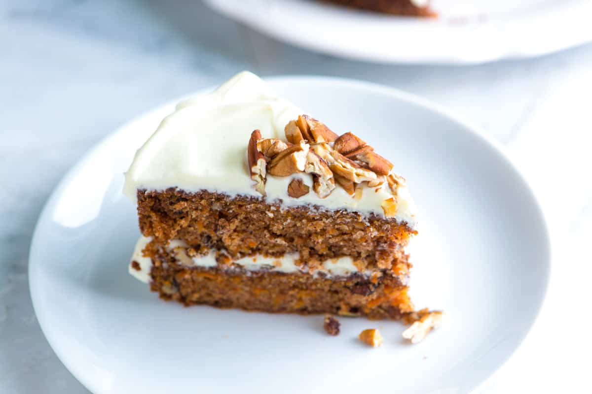

Carrot Cake Recipe

Carrot cake is a delightful treat that combines rich, moist texture with the perfect balance of sweet and spiced flavors.
The earthy taste of carrots adds a unique depth to the cake, while cinnamon and nutmeg bring warmth and complexity.
The cream cheese frosting, with its tangy and creamy sweetness, complements the cake beautifully, creating a perfect bite every time.
Whether served at a special celebration or enjoyed as an everyday indulgence, carrot cake feels both comforting and indulgent.
Its combination of fresh ingredients, spices, and frosting makes it an irresistible dessert loved by many.
Ingredients
- 2 cups all-purpose flour
- 2 tsp baking powder
- 1/2 tsp baking soda
- 1/2 tsp salt
- 2 tsp ground cinnamon
- 1/2 tsp ground nutmeg
- 1/2 cup vegetable oil
- 1 1/2 cups granulated sugar
- 4 large eggs
- 2 cups finely grated carrots
- 1/2 cup chopped walnuts or pecans (optional)
- 1 tsp vanilla extract
Steps
- Preheat your oven to 350°F (175°C) and grease and flour two 9-inch round cake pans.
- In a large bowl, whisk together 2 cups of all-purpose flour, 2 teaspoons of baking powder, 1/2 teaspoon of baking soda, 1/2 teaspoon of salt, 2 teaspoons of ground cinnamon, and 1/2 teaspoon of ground nutmeg.
- In another bowl, beat together 1/2 cup of vegetable oil, 1 1/2 cups of granulated sugar, and 4 large eggs until smooth and creamy.
- Stir in 1 teaspoon of vanilla extract and 2 cups of grated carrots. If desired, fold in 1/2 cup of chopped walnuts or pecans.
- Gradually add the dry ingredients into the wet ingredients, mixing until just combined.
- Divide the batter evenly between the prepared cake pans and smooth the tops with a spatula.
- Bake in the preheated oven for 30-35 minutes, or until a toothpick inserted into the center comes out clean.
- Remove the cakes from the oven and allow them to cool in the pans for 10 minutes before transferring to a wire rack to cool completely.
- Once the cakes have cooled, frost with cream cheese frosting and garnish with additional walnuts if desired.
- Slice, serve, and enjoy your delicious carrot cake!